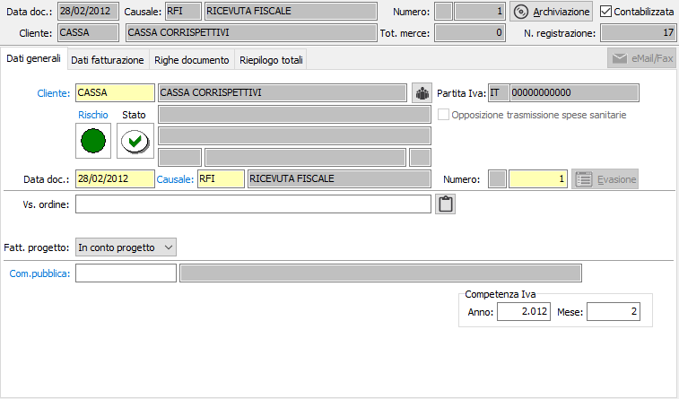
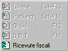

Dati generali
All’inizio di una nuova ricevuta fiscale il cursore è posizionato sul campo cliente della linguetta dati generali, da cui inizia l’inserimento.

CLIENTE: viene proposto in automatico il cliente cassa presente in configurazione. Codice alfanumerico di 8 caratteri, presente in anagrafica clienti, che individua il cliente da trattare. Sul campo, la cui compilazione è obbligatoria, sono attive le funzioni di ricerca (F9) ed accesso rapido alla tabella (CTRL+W) per eventuali nuovi inserimenti o variazioni. Il codice inserito in questo campo è quello del cliente a cui è intestata la ricevuta fiscale. Dopo aver selezionato il codice del cliente vengono visualizzati, senza possibilità di modifica, i dati anagrafici. Se presente nella linguetta preferenze dell’anagrafica cliente, viene anche compilato automaticamente il successivo campo causale ricevuta fiscale con la causale esistente in anagrafica. La procedura non consente l’inserimento della ricevuta fiscale nel caso in cui il campo Codice stato dell’anagrafica cliente contenga i valori Bloccato o Spedizioni sotto controllo.
Vengono visualizzati, tramite appositi indicatori visivi, lo stato di rischio, derivante dal Company Shield e lo stato di affidabilità derivante dalla situazione amministrativa; cliccando sull'etichetta Rischio viene mostrata la legenda che spiega i significati dei colori mostrati, cliccando invece sull'indicatore colorato, se il servizio Credit Shield è attivo e ci sono informazioni, si accede direttamente all'analisi della partita Iva con quella riportata sul documento, posizionati sulle informazioni semaforiche. Se lo stato di rischio non viene visualizzato significa che il servizio è attivo, ma l'utente con cui si è collegati non è configurato come utente Company Shield oppure non ha l'abilitazione alla visualizzazione dei semafori.
Sia l'indicatore di rischio che l'indicatore di stato non causano alcun blocco all’inserimento del documento, ma si limitano a mettere sull’avviso l’utente.
Gli indicatori di stato possono essere così riassunti:
punto interrogativo: indica che non è presente nessun valore da controllare;
segno di spunta verde: indica che è presente un fido sufficiente a coprire gli eventuali scoperti;
punto esclamativo su fondo giallo: indica di fare attenzione perchè non è presente nessun fido ed è presente uno scoperto;
X su sfondo rosso: indica che è presente un fido che non è sufficiente a coprire lo scoperto.
Cliccando sull'immagine, se gestiti i saldi clienti/fornitori in configurazione, si attiva la finestra video di Situazione amministrativa che consente di visualizzare il fido concesso e la situazione amministrativa dettagliata; nel caso esista uno scoperto di fido il totale viene evidenziato in rosso. L’eventuale saldo negativo fra i vari valori non comporta tuttavia alcun blocco, ma consente all’utente di decidere in merito all’opportunità di inserire il documento.
DATA DOCUMENTO: campo data in cui viene visualizzata la data di sistema, modificabile dall’utente.
CAUSALE: codice alfanumerico di 3 caratteri presente nella tabella Causali ricevute fiscali che definisce la tipologia di ricevuta fiscale in esame. Se, presente, viene visualizzata la causale esistente nelle preferenze dell’anagrafica del cliente in esame, modificabile dall’utente. Sul campo sono attive le funzioni di ricerca (F9) ed accesso rapido (CTRL+W) sulla tabella stessa.
NUMERO:

campo numerico che contiene il numero progressivo della ricevuta fiscale. Viene compilato automaticamente dal programma in base alla serie contenuta dalla causale. E’ modificabile dall’utente. Premendo l'apposito pulsante Evasione, compare un menù che consente l'evasione delle ricevute fiscali. Questa possibilità è prevista nel caso si stia compilando una ricevuta di incasso.
VOSTRO ORDINE: campo alfanumerico per l’eventuale descrizione degli estremi dell’ordine del cliente.
DATE COMPETENZA: Indicare l'eventuale periodo di competenza della ricevuta fiscale (se gestito in configurazione vendite).
COMMESSA PUBBLICA: Codice della commessa pubblica, sul campo sono attive le funzioni di ricerca (F9) ed accesso diretto alla tabella (CTRL+W). Il campo è presente solo se attiva la gestione della normativa antimafia e se gestita per il tipo documento.